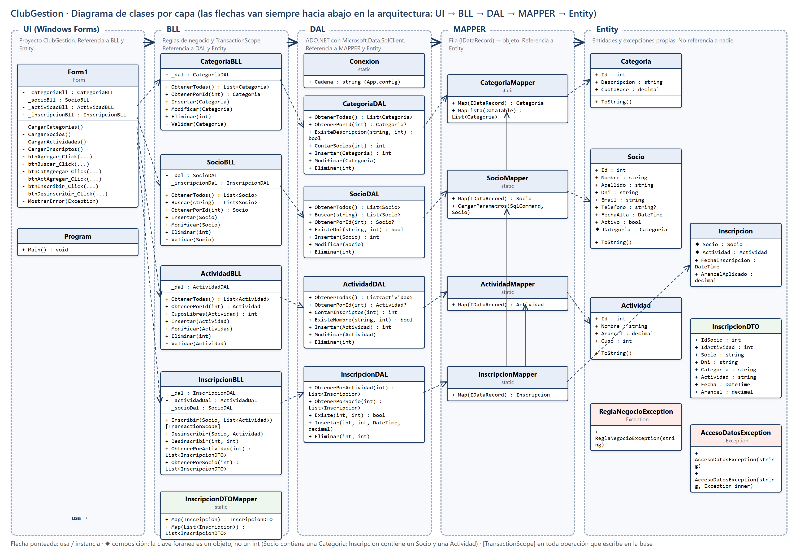
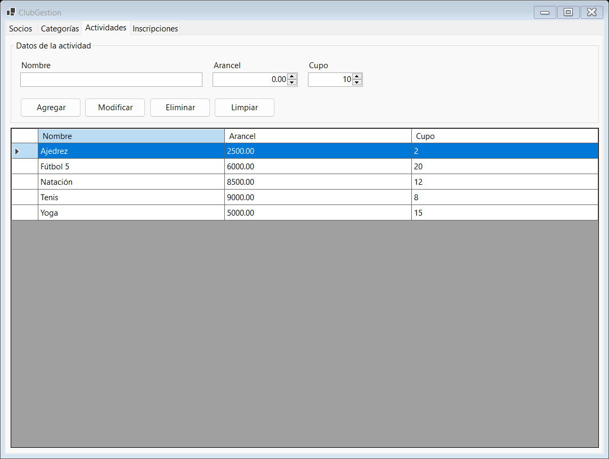

| Materia | Lenguajes de Última Generación (T4-17-14) |
|---|---|
| Profesor | Gonzalo Arigós |
| Comisión | 2-B · 2° cuatrimestre de 2026 |
| Fecha de entrega | 15 de noviembre de 2026 |
| Repositorio | github.com/lucasgaudino16-dotcom/ClubGestion |
| Integrante | Gaudino, Lucas |
|---|
ClubGestion es una aplicación de escritorio para la secretaría de un club de barrio: administra el padrón de socios, las categorías de socio, el catálogo de actividades y las inscripciones de socios a actividades.
Un club de barrio tiene socios y ofrece actividades deportivas y recreativas. El socio paga una cuota mensual que depende de su categoría, y además un arancel por cada actividad en la que se anota. Cada actividad tiene un cupo, porque la cancha, el profesor y el horario son limitados.
Hoy la secretaría lleva todo en papel y en planillas sueltas. De ahí salen los tres problemas que justifican el sistema:
Con ClubGestion la secretaría puede:
El sistema impide las operaciones que el club no quiere que pasen: anotar a un socio dado de baja, pasarse del cupo, anotar dos veces al mismo socio en la misma actividad, repetir un DNI o borrar datos que tienen historia atrás.
Un solo tipo de usuario: el administrativo de la secretaría del club. No es una persona técnica y trabaja con la aplicación abierta todo el día, atendiendo socios en el mostrador. De ahí salen dos decisiones: una sola ventana con pestañas en lugar de muchas ventanas sueltas, y mensajes en castellano del tipo "No quedan cupos en Natación" en lugar de un número de error.
| No hace | Por qué |
|---|---|
| No cobra plata ni se conecta con medios de pago. | Registra el importe que corresponde; el cobro lo hace la tesorería del club por fuera. |
| No tiene usuarios ni contraseñas. | Corre en la computadora de la secretaría, con un solo perfil de uso. |
| No manda mails ni avisos. | Fuera del alcance de la materia. |
| No es multisucursal ni funciona por internet. | Es una aplicación de escritorio contra una base local. |
| No maneja asistencia ni horarios de clase. | Administra la inscripción, no el dictado de la actividad. |
| Concepto | Qué es en el club | Qué se guarda de él |
|---|---|---|
| Categoría | El tipo de socio, que determina cuánto paga de cuota mensual. Hoy son Activo, Cadete y Vitalicio. | Descripción y cuota base. |
| Socio | La persona asociada al club. | Nombre, apellido, DNI, email, teléfono, fecha de alta, si está activo y a qué categoría pertenece. |
| Actividad | Lo que el club ofrece: Fútbol 5, Natación, Yoga, Tenis, Ajedrez. | Nombre, arancel y cupo de personas. |
| Inscripción | El hecho de que un socio se anotó en una actividad. | Qué socio, qué actividad, en qué fecha y con qué arancel entró. |
Una categoría tiene muchos socios y cada socio pertenece a una sola categoría. Es la relación de uno a muchos. Sirve para que al cambiar la cuota de la categoría Cadete cambie para todos los cadetes de una vez, sin tocar socio por socio.
Un socio puede estar en muchas actividades y una actividad tiene muchos socios. Es una relación de muchos a muchos, y no se puede guardar en ninguna de las dos fichas. Por eso la inscripción existe como cosa propia.
La inscripción existe por dos motivos, no por uno. Además de unir al socio con la actividad, guarda dos datos que no son ni del socio ni de la actividad, sino del hecho de anotarse: la fecha de inscripción y el arancel aplicado.
Ese segundo dato es el que resuelve el problema del precio viejo. El arancel de la actividad es la lista de precios de hoy; el arancel aplicado es la foto del precio que pagó ese socio cuando se anotó. Si el club aumenta Natación de 8500 a 10000, los que ya estaban anotados siguen con 8500 y el sistema lo puede demostrar. Si guardáramos solo el precio en la actividad, el aumento reescribiría la historia de todos.
Esto da las cuatro tablas de la base de datos, con una relación de uno a muchos y una de muchos a muchos con atributos propios, que es lo que pide la consigna.
Estas reglas son lo que separa al sistema de una planilla. Se verifican en la capa de negocio antes de tocar la base de datos, y cuando una no se cumple el usuario ve un aviso que le dice qué pasó.
La consigna pide manejo de transacciones de negocio, y el club tiene un caso natural: inscribir a un socio en varias actividades a la vez.
El administrativo tilda Fútbol 5, Natación y Yoga y aprieta Inscribir. Son tres inscripciones separadas, pero para el club es un solo trámite. Si al llegar a la tercera resulta que Yoga ya se llenó, el sistema no puede dejar al socio anotado en las dos primeras: el mostrador le dijo "te anoto en las tres" y le cobró por las tres.
Entonces la operación se deshace completa y el socio queda como estaba, con un aviso que dice en qué actividad falló y que no se registró ninguna inscripción. Las tres inscripciones entran juntas o no entra ninguna. Nunca queda el club con un trámite a medio hacer.
Cómo está implementado. El método InscripcionBLL.Inscribir(socio, actividades) abre un TransactionScope, recorre las actividades y por cada una verifica el cupo y llama a la capa de datos para insertar la fila. Si una regla falla, se lanza ReglaNegocioException, el using termina sin scope.Complete() y SQL Server revierte todo lo insertado antes. Cada método de la capa de datos abre y cierra su propia conexión; como todas usan la misma cadena, se enlistan en la misma transacción sin necesidad de pasar la conexión por parámetro.
Además, toda operación individual que escribe en la base (alta, modificación y baja de socios, categorías, actividades e inscripciones) también corre dentro de un TransactionScope en la capa de negocio, de modo que un error a mitad de camino nunca deja datos a medias.
El sistema está separado en cinco capas y cada una tiene un solo trabajo. La forma más fácil de entenderlo es pensar en cómo circula un papel en la secretaría del club.
| Capa | Su papel en el club | Qué hace |
|---|---|---|
| UI (Windows Forms) | La ventanilla donde atiende al socio. | Muestra las pantallas, toma lo que el usuario escribe y es el único lugar donde aparece un cartel. No decide nada. |
| BLL | El encargado de la secretaría. | Decide. Acá viven todas las reglas del punto 3 y las transacciones del punto 4. Es la única capa que puede decir "no". |
| DAL | El archivo donde están las carpetas. | Habla con la base de datos con ADO.NET: busca, guarda, modifica y borra filas con SqlParameter y bloques using. No opina sobre las reglas. |
| MAPPER | El que traduce la ficha de cartón a los datos del sistema. | Convierte una fila de la base (IDataRecord) en un objeto del programa. |
| Entity | El formato de la ficha en blanco. | Define qué datos tiene un socio, una categoría, una actividad y una inscripción, y las dos excepciones propias. No hace nada, solo guarda. |
Las capas se apoyan siempre hacia abajo y nunca hacia arriba: la ventanilla le pide al encargado y el encargado le pide al archivo. La ventanilla no entra al archivo por su cuenta. Eso es lo que hace que una regla de negocio esté escrita en un solo lugar y valga para toda la aplicación.
Cuando algo falla, el problema viaja hacia arriba cambiando de idioma en cada capa. La capa de datos atrapa la SqlException y la traduce a una AccesoDatosException con un mensaje como "Error al consultar los socios", guardando el error original adentro. La capa de negocio la deja pasar o la reemplaza por una explicación de negocio (ReglaNegocioException: "No quedan cupos en Yoga"). La pantalla la muestra como un cartel: los avisos de negocio con ícono de advertencia y el resto con ícono de error y el detalle técnico debajo. El usuario nunca ve un error sin explicación, y nunca se pierde el detalle original.
La base de datos es SQL Server (LocalDB en desarrollo). La cadena de conexión está en App.config y la lee un solo lugar, DAL\Conexion.cs. La clave foránea se modela como objeto, no como número: el socio tiene adentro su categoría y la inscripción tiene adentro el socio y la actividad.
| Tabla | Clave primaria | Claves foráneas | Otras restricciones |
|---|---|---|---|
| CATEGORIA | ID_CATEGORIA (identity) | — | DESCRIPCION única; CUOTA_BASE ≥ 0 |
| SOCIO | ID_SOCIO (identity) | ID_CATEGORIA → CATEGORIA | DNI único; FECHA_ALTA y ACTIVO con valor por defecto |
| ACTIVIDAD | ID_ACTIVIDAD (identity) | — | NOMBRE único; ARANCEL ≥ 0; CUPO > 0 |
| INSCRIPCION | (ID_SOCIO, ID_ACTIVIDAD) | ID_SOCIO → SOCIO; ID_ACTIVIDAD → ACTIVIDAD | FECHA_INSCRIPCION con valor por defecto; ARANCEL_APLICADO obligatorio |
El script script_base_de_datos.sql crea la base, las tablas y los datos de ejemplo con IF ... IS NULL, así se puede ejecutar más de una vez sin error.

Lo importante que muestra el diagrama: la clave foránea es un objeto y no un número. Socio tiene adentro una Categoria, e Inscripcion tiene adentro un Socio y una Actividad. Los mappers se reutilizan: SocioMapper llama a CategoriaMapper con las columnas del JOIN, e InscripcionMapper llama a los dos. La grilla de inscriptos recibe un InscripcionDTO plano que arma la capa de negocio, para que la pantalla no tenga que navegar objetos.
script_base_de_datos.sql en SQL Server Management Studio conectado a (localdb)\MSSQLLocalDB. Crea la base ClubGestion con categorías, socios, actividades e inscripciones de ejemplo.ClubGestion.sln en Visual Studio 2022 y ejecutar el proyecto ClubGestion.Data Source en ClubGestion\App.config. No hace falta recompilar.La aplicación es una sola ventana con cuatro pestañas: Socios, Categorías, Actividades e Inscripciones. En las tres primeras la mecánica es la misma: arriba el formulario, abajo la grilla; al hacer clic en una fila de la grilla sus datos se cargan arriba para modificarlos o eliminarlos, y Limpiar vuelve al modo de alta.




Los avisos con ícono amarillo son reglas de negocio: el sistema no hizo nada y explica qué corregir. Los avisos con ícono rojo son errores técnicos (por ejemplo, la base de datos no responde) e incluyen el detalle debajo del mensaje.
| Aviso | Qué pasó y qué hacer |
|---|---|
| El DNI debe tener 7 u 8 dígitos, sin puntos. | Escribir el DNI solo con números. |
| Ya existe un socio con el DNI 40111222. | El socio ya está cargado: buscarlo y modificarlo en lugar de darlo de alta de nuevo. |
| El socio tiene inscripciones. Dalo de baja en lugar de eliminarlo. | Destildar Activo y Modificar. |
| No se puede eliminar Activo porque tiene 3 socio(s). | Reasignar esos socios a otra categoría y volver a intentar. |
| La actividad ya tiene 2 inscriptos: el cupo no puede ser menor. | Elegir un cupo mayor o igual a los inscriptos. |
| No quedan cupos en Ajedrez. No se registró ninguna inscripción. | La operación completa se revirtió. Destildar esa actividad y volver a inscribir. |
| Gaudino, Lucas ya está inscripto en Yoga. | No hace falta hacer nada: ya estaba anotado. |
| El socio está dado de baja. | Reactivarlo desde la pestaña Socios antes de inscribirlo. |
| Error al consultar los socios. Detalle: Cannot open database... | La base no está disponible: revisar que LocalDB esté corriendo y que el script se haya ejecutado. |
Documento generado el 15/11/2026 a partir del repositorio del grupo. El código fuente, el script de la base y este documento están en github.com/lucasgaudino16-dotcom/ClubGestion.